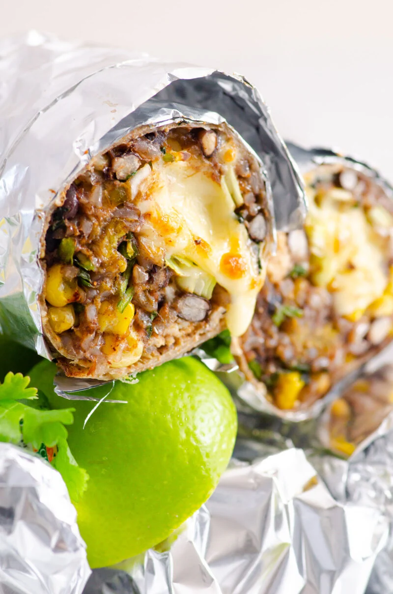

Burrito Recipe

Description
This recipe is for a quick and simple chicken burrito that can be made in only a few steps. This will take about 40 mintues in total to make and will serve four burritos
Ingredients
- 2 teaspoons Gay Lea Butter
- 1 pound skinless, boneless chicken breasts, cut into 1-inch cubes
- Salt and ground black pepper
- 2 cups shredded Ivanhoe Old Cheddar
- 1 cup diced green pepper
- 2/3 cup Gay Lea Sour Cream
- 1/3 cup salsa
- 1 jalapeno pepper, seeded and minced
- 2 tablespoons chopped fresh cilantro
- 4 large flour tortillas
- 1/2 cup sliced black olives (Optional)
Steps
- Preheat the oven to 350 degrees F (180 degrees C).
- Melt butter in a large skillet over medium-high heat. Add chicken and cook until no longer pink inside, about 8 minutes. Season with salt and pepper, then transfer to a large bowl.
- Add 1 cup shredded cheese, bell pepper, sour cream, olives, salsa, jalapeño, and cilantro to the chicken; stir to combine.
- Place 1/4 of the chicken mixture onto a tortilla. Fold and roll tortilla to completely enclose filling, then place it, seam-side down, in a small baking dish. Repeat to fill and roll remaining tortillas. Sprinkle the remaining cheese over top.
- Bake in center of the preheated oven until cheese is melted and tortillas are crispy, about 20 minutes.
Back to recipes